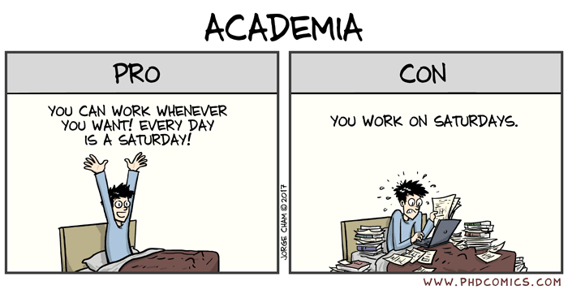

Research
A curated list of my current research interests, and those that I previously worked on during my PhD and prior to that – my attempts to understand and appreciate some aspects of human life!
Table of Contents
Here’s a funny take on academia - can’t agree more!  Source: Piled Higher and Deeper
Current Research
My current work is on full-stack distributed ledger technology system research, with specialization in blockchain implementation and application.
Distributed Ledger Technology
Distributed ledgers are managed by a peer-to-peer network collectively adhering to some consensus protocol. A blockchain is only one type of data structure considered to be a distributed ledger, that was originally designed to be open, permissionless and public for cryptocurrencies. However, over time several access controlled, permissioned and private alternatives have evolved for catering to large-scale multi-party transaction management applications undertaken by industries and corporations. An all-encompassing central requirement of both permissionless and permissioned blockchains is its privacy and security guarantees. While the privacy and security issues in permissionless blockchains are well understood and dealt with, those in permissioned blockchains are still sparse and under-reported. This is despite the fact that the use of permissioned blockchains is on a rapid rise for both commercial and academic fronts.
One of my major recent works is on the security and privacy studies of different blockchain flavours, and other types of distributed ledgers including Iota, Tangle and Hedera Hashgraph.
Blockchain Implementation
Blockchain enabled supply chain transaction management can help participants to effectively record price, date, location, quality, certification, and other relevant information. The availability of this information in the blockchain can increase traceability of material supply, lower losses from counterfeit and gray market, improve visibility and compliance over outsourced contract manufacturing, and potentially enhance an organization’s position in responsible manufacturing. Blockchain driven innovations in the supply chain will have the potential to deliver tremendous business value by increasing transparency, reducing risk, and improving overall supply chain efficiency.
My current project is on Cybersecurity Protocol and Mechanism for e-Logistics of Dangerous Goods Tracking using Blockchain Supply Chain Management.
Additionally I’m also working on IC Manufacturing using blockchain, and more recently on blockchain enabled autonomous vehicle secure data management.
Blockchain Software
I have woking experience on Ethereum and Hyperledger. See my Github for more details.
Additionally, I’m involved in the development of our group’s own Blockchain-as-a-service app that allows users (clients) to invoke a host (server) running a blockchain enabled ledger – to maintain, retrieve and search supply chain transaction records, that are securely logged in into the blockchain. The API functions as a remote web service which allows users to use our blockchain enabled distributed ledger platform from a website, software or mobile application. The API gives access to all of the supported functions of our service. The web service uses REST-like RPC-style operations over HTTP POST requests with parameterized URL encoded into the request and its response is encoded in JSON. It is designed to be easy to use and users can implement it in any model computer language that allows them to generate TCP requests.
During PhD
My primary research area for PhD was mathematical modeling and simulation of semiconductor quantum nanostructures such as quantum dots/wells/wires/rings and nanoplatelets of II-VI, III-V and group IV materials. During my PhD I have published in several Tier-1 journals and conferences – see my publication list from 2014-2018.
Semiconductor Quantum Nanostructures
Semiconductor quantum nanostructures, such as 0D quantum dots (QDs), 1D nanorods and 2D nanoplatelets (NPLs), quantum rings (QRs) and quantum wells (QWs) exhibit unique quantum mechanical and optoelectronic properties due to spatial confinement of excitons in one or more dimensions (∼10−9 m). They have received increasing research interest in recent years owing to their intriguing fundamental properties that can be leveraged for potential applications in optoelectronic and display devices as cost-effective and quantum-efficient luminophores. They have been successfully used to implement and design light-emitting diodes (LEDs), lasers, photodetectors, solar cells, biomedical imagers, etc. This is owing to their morphological bandgap tunability, fast fluorescence lifetime and unique optical characteristics supporting tunable pure-color or wide spectral emission. Among the wide range of available and newly studied semiconductor quantum nanostructures, firstly (i) NPLs and QRs of II-VI materials and alloys thereof, and secondly (ii) QDs and QWs of III-V dilute nitride/bismide alloy materials are two families of nanostructures that have emerged as very promising candidates for novel semiconductor device and optoelectronic applications.
In my PhD thesis, I’ve reported studies on the aforementioned two families of semiconductor quantum nanostructures.
The first part of the thesis focuses on the study of II-VI (CdSe and CdS) NPLs and optoelectronic properties thereof under varying physical conditions such as geometrical dimensions, temperature, material composition, topology and optical polarization. NPLs are a unique class of atomically flat quasi-2D quantum confined nanocrystals, often synthesized using wide bandgap II-VI materials, having well-defined thicknesses of several monolayers (MLs). Their sizes enable them to be colloidally suspended in solution. Recent advancements in colloidal chemistry has led to the efficient synthesis of high quality single crystal NPL samples having reduced nonradiative recombination paths and enhanced optical properties. They exhibit strong 1D confinement as their thickness is very small compared to the Bohr radius. NPLs possess the wide bandgap tunability of QDs and the short exciton decay time of QWs bringing together advantageous features from two domains. Compared to QDs, they typically have narrower emission spectra, reduced inhomogeneous broadening and suppressed Auger recombination.
The second part of the thesis focuses on the study of quaternary dilute nitride/bismide III-V (InNBiAs, InNBiSb and GaNBiAs) QDs and QWs for their optoelectronic properties and application. Dilute nitride/bismide doped III-V alloys promises increased engineering flexibility in the design of advanced compound semiconductor heterostructure devices. Increased control over key device parameters such as lattice constant, bandgap and band offsets opens the door to improved performance for a wide range of electronic and optoelectronic devices. In dilute nitride alloys, the resonant states couples with the conduction band (CB) states and produces the band anticrossing (BAC) effects. This causes the CB band edge to get lowered compared to the unalloyed case. Similarly, for dilute bismide alloys, the valence band (VB) edge is lifted due to the valence band anticrossing (VBAC) resulting from coupling between its resonant states and VB states. In addition, the spin-orbital-splitting energy can exceed the bandgap in dilute bismuth alloy which can inhibit the Auger recombination, making it an excellent candidate for optoelectronic device applications, particularly suited for optical fiber telecommunication applications.
The core machinery of the modeling and simulation study of semiconductor quantum nanostructures was an effective-mass envelope function theory based on the 8-band and 16-band k·p models with strain effect considerations. The optical properties calculations were based on the density-matrix equation, taking into consideration the excitonic effects with intraband scattering and temperature effects. For each of the nanostructure studied, I had performed a comprehensive study on a range of optoelectronic characteristics such as the strain tensor profiles, excitonic transition energies, optical transition matrix elements, Fermi factors, spatial change densities, electron-hole wavefunctions, electronic bandstructure/band lineups, band-mixing probabilities, photoluminescence emission spectra, optical gain/absorption spectra, maximum and differential gains and transparency properties. These findings have important implications for the application of II-VI NPLs and QRs; and dilute nitride/bismide III-V QDs and QWs in optoelectronic devices, such as LEDs, lasers, solar cells etc. They serve as an enabler for designing experiments and predicting optoelectronic characteristics in tandem with measurements and fabrication and can be used to tune reiterations parameters to reduce time and cost of device production.
Before PhD
As as undergraduate student, I experimented with a lot of different areas spanning metamaterials, antennas, free space optics, robotics, embedded systems, communications, etc.
Metamaterials, Antennas, Free Space Optics
See my publication list from 2012-2013 for more details.
Robotics, Embedded Systems, Communications
See my publication list from 2012-2013 for more details.